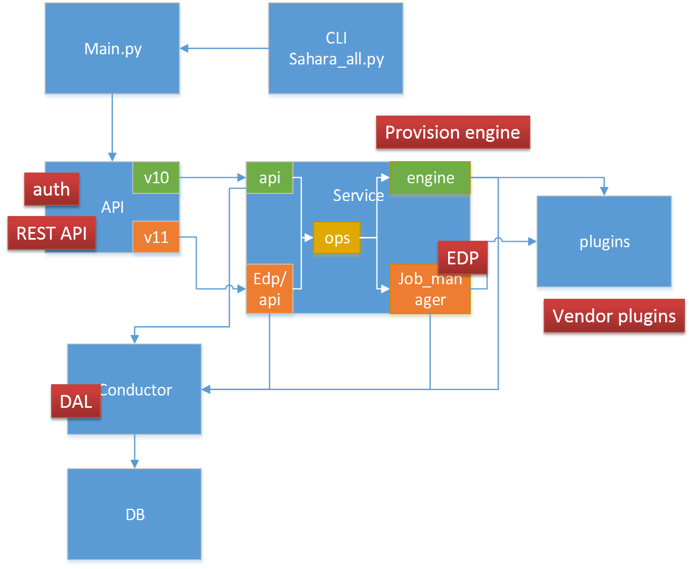
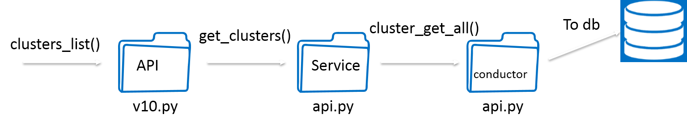
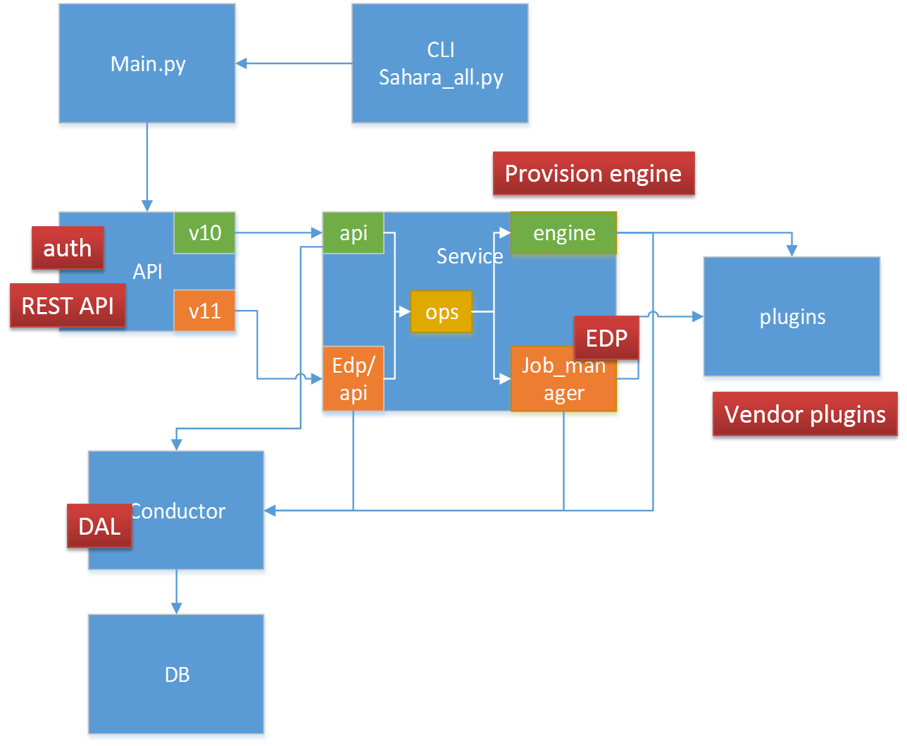
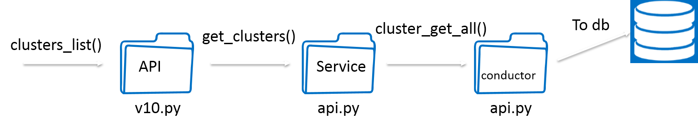
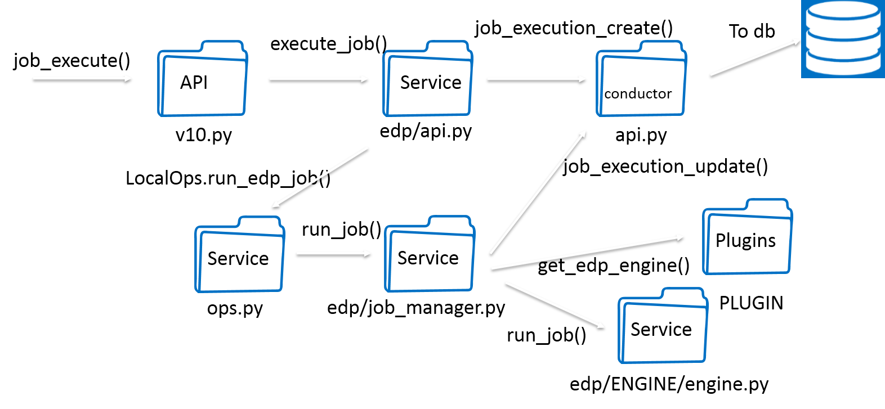
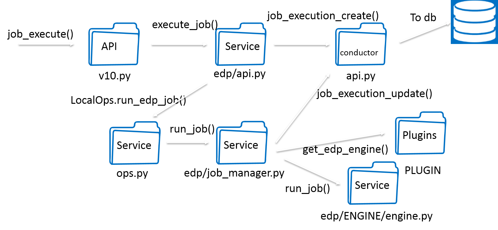

Sahara¶
About¶
Red Hat’s doc of Deploying sahara
- sahara - openstack data processing project
Note
cinder volume not created locally according to instances’ loaction
 



 


Sahara Cluster Status¶
| phase | description |
|---|---|
| Validating | check all necessary fields not violate, topology validation, or other validation before provisioning a cluster |
| Spawning | create VMs Volumes Floating IPs(need check default quota, hypervisor resources) |
| Waiting | waits while VM’s operating system boot up & internal infrastructure like net and volumes are attached |
| Preparing | generating /etc/hosts, authorized_keys for VMs communication |
| Starting | starting hadoop services on VMs |
| Active | cluster has started successfully |
| Error | cluster creation fails |
plugins¶
vanilla¶
The vanilla plugin is a reference implementation which allows users to operate a cluster with Apache Hadoop.
CDH¶

Sahara Optimizaion Angles¶
- Cluster Type
- Long term cluster
- Transient cluster (Workload specific)
- which docker or kvm for long tern clusetr?
- Cluster Size
- big mem
- more cores
- faster disk
- better network
- Data Locations
- Streaming
- copying
- Service Position
- whether split master or slave services
- Disk type
- ephemeral disk for sys
- cinder for both sys and storage
Tenent control & QoS
Valuation other than performance, like boot speed, idle percent(vm system cost).
whether use container like magnum